Introduction
In this tutorial you will learn how to be derive basic insights from data and visualize joint probabilities. In particular we will be visualizing discrete distributions, both univariate and multivariate. By the end of the tutorial you will be able to:
- draw bar, column charts and treemaps
- visualize distribution of more than one variable
- draw eikosograms to visualize independence and bayes rule,
- interpret these graphs.
Getting Started
We will visualize two COVID-19 confirmed cases datasets. To be able to follow you need:
- to download covid.db and game_goals.csv data uploaded on LEARN
-
some packages including
-
tidyverse eikosogramRSQLitetreemapifywaffleggthemeshrbrthemes
Let’s read the game_goals and covid datasets as below:
library('tidyverse')
goals.p <- read.csv('data/game_goals.csv')
library('RSQLite')
con <- dbConnect(RSQLite::SQLite(), dbname = "data/covid.db")
covid <- dbGetQuery(con, "SELECT * FROM confirmed")
dbDisconnect(con)
Now run str, dim and head function to summarize your data:
str(goals.p)
## 'data.frame': 49384 obs. of 25 variables:
## $ player : Factor w/ 42 levels "Alex Ovechkin",..: 1 1 1 1 1 1 1 1 1 1 ...
## $ season : int 2006 2006 2006 2006 2006 2006 2006 2006 2006 2006 ...
## $ rank : int 1 2 3 4 5 6 7 8 9 10 ...
## $ date : Factor w/ 6523 levels "1979-10-10","1979-10-11",..: 3998 4000 4001 4003 4005 4006 4009 4013 4015 4019 ...
## $ game_num : int 1 2 3 4 5 6 7 8 9 10 ...
## $ age : Factor w/ 8827 levels "18-016","18-019",..: 685 687 688 690 692 693 696 700 702 706 ...
## $ team : Factor w/ 37 levels "ANA","ARI","ATL",..: 37 37 37 37 37 37 37 37 37 37 ...
## $ at : Factor w/ 1 level "@": NA NA 1 NA 1 NA NA 1 NA 1 ...
## $ opp : Factor w/ 41 levels "ANA","ARI","ATF",..: 9 4 4 27 7 26 35 17 7 6 ...
## $ location : Factor w/ 2 levels "Away","Home": 2 2 1 2 1 2 2 1 2 1 ...
## $ outcome : Factor w/ 5 levels "L","L-OT","L-SO",..: 5 1 1 5 1 1 5 1 1 5 ...
## $ goals : int 2 0 0 1 1 0 0 2 0 0 ...
## $ assists : int 0 1 1 0 0 1 1 0 0 1 ...
## $ points : int 2 1 1 1 1 1 1 2 0 1 ...
## $ plus_minus : int 1 -2 0 1 0 -1 1 1 0 0 ...
## $ penalty_min : int 2 0 4 2 0 0 0 0 0 0 ...
## $ goals_even : int 1 0 0 0 1 0 0 2 0 0 ...
## $ goals_powerplay : int 1 0 0 1 0 0 0 0 0 0 ...
## $ goals_short : int 0 0 0 0 0 0 0 0 0 0 ...
## $ goals_gamewinner : int 0 0 0 1 0 0 0 0 0 0 ...
## $ assists_even : int NA NA NA NA NA NA NA NA NA NA ...
## $ assists_powerplay: int NA NA NA NA NA NA NA NA NA NA ...
## $ assists_short : int NA NA NA NA NA NA NA NA NA NA ...
## $ shots : int 5 1 3 6 6 5 2 10 2 5 ...
## $ shot_percent : num 40 0 0 16.7 16.7 0 0 20 0 0 ...
dim(goals.p)
## [1] 49384 25
head(goals.p)
## player season rank date game_num age team at opp location
## 1 Alex Ovechkin 2006 1 2005-10-05 1 20-018 WSH <NA> CBJ Home
## 2 Alex Ovechkin 2006 2 2005-10-07 2 20-020 WSH <NA> ATL Home
## 3 Alex Ovechkin 2006 3 2005-10-08 3 20-021 WSH @ ATL Away
## 4 Alex Ovechkin 2006 4 2005-10-10 4 20-023 WSH <NA> NYR Home
## 5 Alex Ovechkin 2006 5 2005-10-12 5 20-025 WSH @ CAR Away
## 6 Alex Ovechkin 2006 6 2005-10-13 6 20-026 WSH <NA> NYI Home
## outcome goals assists points plus_minus penalty_min goals_even
## 1 W 2 0 2 1 2 1
## 2 L 0 1 1 -2 0 0
## 3 L 0 1 1 0 4 0
## 4 W 1 0 1 1 2 0
## 5 L 1 0 1 0 0 1
## 6 L 0 1 1 -1 0 0
## goals_powerplay goals_short goals_gamewinner assists_even assists_powerplay
## 1 1 0 0 NA NA
## 2 0 0 0 NA NA
## 3 0 0 0 NA NA
## 4 1 0 1 NA NA
## 5 0 0 0 NA NA
## 6 0 0 0 NA NA
## assists_short shots shot_percent
## 1 NA 5 40.0
## 2 NA 1 0.0
## 3 NA 3 0.0
## 4 NA 6 16.7
## 5 NA 6 16.7
## 6 NA 5 0.0
Continuous and Discrete, Numeric and String, Black and Blue
And who knows which is which and who is who
as the song describes very beautifully. The description here is just a footnote to that.
There are three major types of variables, which can be obtained by the combinations of continuous and discrete and numeric and string. For you what matters is if it is categorical or not where category means birds, flowers, female, Waterloo and so on. You cannot average Waterloo to Toronto to get something between them.
-
Continuous numeric describes the variables for which there is continuity and mathematical comparisons make sense. Examples: age can be 20.7, 30.1, 35.5, or stock return can be -0.0325, 0.0819, 0.05338 and so on. It is not categorical.
-
Discrete string describes the variables for which the values are discrete and categorical. Examples: there are some categories in our brains, we categorize birds to robins, blue jays and New York Yankees, and you cannot average them and get another class.
-
Continuous string 404 NOT FOUND
-
Discrete numeric which is the gray zone class here. Depending on the case it is categorical:
-
Horse power of a car is discrete, can be 110, 93, 62 but the numbers between these can be horse power of any car. It is not categorical
- Number of cylinder in an engine is also discrete numbers which can be 4, 6, 8. But the numbers between these or the 6+8=14 doesn’t make sense because there is no car with 14 cylinders. It is categorical.
In the below example the distinction is salient. Horsepower is not
categorical, so when mapped to colour, continuous scale makes sense,
but categorical colour scale is meaningless. # of cylinders is
categorical, so continuous colour scale on the right is meaningless
because it doesn’t codify any car:
library('gridExtra')
g1 <- ggplot(mtcars, aes(x=wt, y = mpg, colour = hp)) + geom_point(size=3) + ggtitle('Colour by hp')
g2 <- ggplot(mtcars, aes(x=wt, y = mpg, colour = as.factor(hp))) + geom_point(size=3) + ggtitle('Colour by as.factor(hp)')
g3 <- ggplot(mtcars, aes(x=wt, y = mpg, colour = cyl)) + geom_point(size=3) + ggtitle('Colour by cyl')
g4 <- ggplot(mtcars, aes(x=wt, y = mpg, colour = as.factor(cyl))) + geom_point(size=3) + ggtitle('Colour by as.factor(cyl)')
grid.arrange(g1,g2,g3,g4, ncol=2)
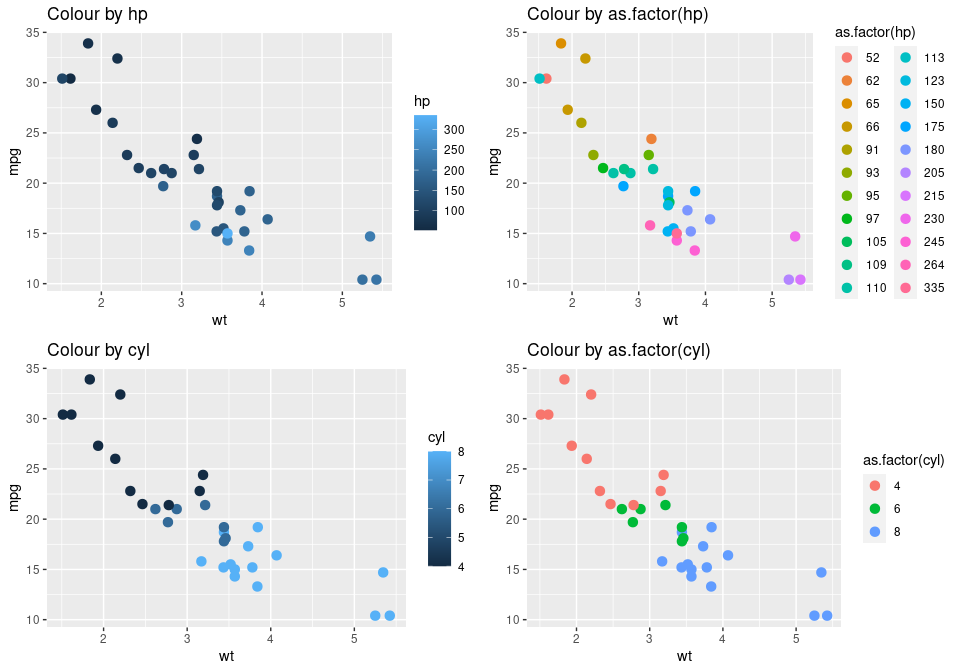
Up and down
And in the end it’s only round and round and round
and round
Histogram vs. Barplot
Histogram and barplot are pretty much the same thing, the first splits
the data automatically, e.g. clusters data into 30 bins; whereas the
latter expects the data to have categories by itself, and clusters the
data into these categories.
Review of Discrete Distributions
There are a couple of discrete distributions each are for different random variables:
Binomial Distribution
Probability of k success in n trials with success rate, p:
$$X \sim Binom(n,k,p) \Rightarrow P(X=k) = \frac{n!}{(n-k)!k!} p^k(1-p)^{n-k}$$
Examples:
- Number of wins in a pre-season of 8 games
- Number of people attending to the flight (k) where there are 50 seats (n) and 95% attendance rate (p)
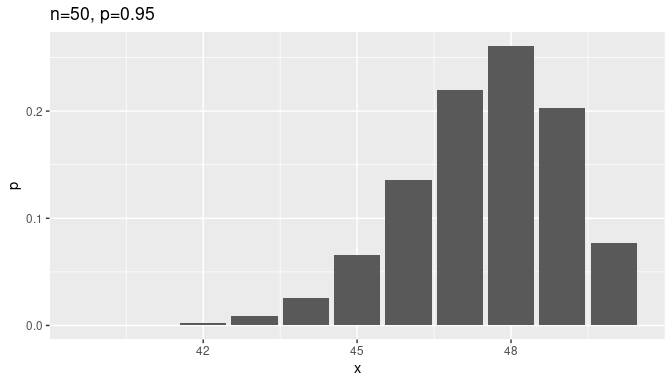
Geometric Distribution
Probability of success in kth trial with success rate of p: X ∼ Geom(k, p) ⇒ P(X = k) = p(1 − p)k − 1
Examples:
- Number of lives you need to pass to next episode (k) in your favourite video game with 40% success rate)
- Number of times you install and remove (k) Linux/Ubuntu to your computer before you get addicted to it with 20% success rate
- Number of times you propose marriag…
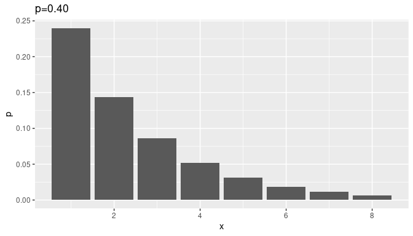
Poisson Distribution
Probability of a given number of events occuring in a given time interval or space.
$$X \sim Pois(k,p) \Rightarrow P(X=k) = \frac{\lambda^k e^{-\lambda}}{k!}$$
Examples:
- Number of goals in a hockey match with goal rate (avg. goal) λ = 3.22
- Number of typo-errors in the lab files that I share with error rate (average error), λ = 7.41
- Number of people (k) to withdraw money from the ATM in University Plaza in a day with average λ = 220
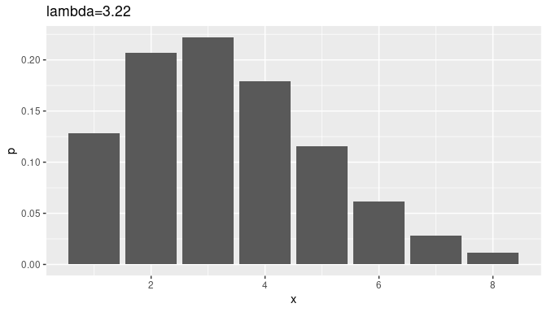
Visualizing Discrete Distributions
Before diving in to the visuals we need to what kind of data do we need, and know some more functions to prepare the data.
Aggregating Data (Group By)
From time to time you may need to aggregate your data. For example:
- Counting number of people who were infected by COVID-19
- Summing number of goals by each player
- Averaging number of goals by each player in each game
There are a lot of ways to do it. One easy way is to use group_by
function from tidyverse. For example, to calculate the number of goals
per player to see who is the best, we can aggregate the data by player
names and sum the goals variable:
agg_goals <- group_by(.data = goals.p, player) %>% summarise(ngoals = sum(goals))
head(agg_goals)
## # A tibble: 6 x 2
## player ngoals
## <fct> <int>
## 1 Alex Ovechkin 701
## 2 Anze Kopitar 330
## 3 Brad Marchand 287
## 4 Brendan Shanahan 656
## 5 Brett Hull 741
## 6 Corey Perry 377
Number of goals per the date:
agg_goals <- group_by(goals.p, date) %>% summarise(ngoals = sum(goals))
tail(agg_goals)
## # A tibble: 6 x 2
## date ngoals
## <fct> <int>
## 1 2020-02-20 4
## 2 2020-02-21 3
## 3 2020-02-22 7
## 4 2020-02-23 6
## 5 2020-02-25 7
## 6 2020-02-26 1
Number of goals per the date and player:
agg_goals <- group_by(goals.p, date, team) %>% summarise(ngoals = sum(goals))
tail(agg_goals)
## # A tibble: 6 x 3
## # Groups: date [2]
## date team ngoals
## <fct> <fct> <int>
## 1 2020-02-25 TBL 0
## 2 2020-02-25 TOR 2
## 3 2020-02-25 WSH 1
## 4 2020-02-26 LAK 0
## 5 2020-02-26 PIT 0
## 6 2020-02-26 VEG 1
Both player’s total number of goals and average per game :
agg_goals <- group_by(goals.p, player) %>% summarise(goals = sum(goals), avg=sum(goals)/n())
tail(agg_goals)
## # A tibble: 6 x 3
## player goals avg
## <fct> <int> <dbl>
## 1 Steve Yzerman 692 0.457
## 2 Steven Stamkos 422 0.526
## 3 Teemu Selanne 684 0.471
## 4 Tyler Seguin 278 0.378
## 5 Wayne Gretzky 894 0.601
## 6 Zach Parise 382 0.379
Sometimes we need to group by just counting rows. For example in covid
dataset each row corresponds to a person who is diagnosed to have the
disease. Let’s group by City and Gender:
agg_covid <- group_by(covid, City, Gender) %>% summarise(ncases = n())
head(agg_covid)
## # A tibble: 6 x 3
## # Groups: City [3]
## City Gender ncases
## <chr> <chr> <int>
## 1 Barrie FEMALE 219
## 2 Barrie MALE 165
## 3 Belleville FEMALE 28
## 4 Belleville MALE 15
## 5 Brantford FEMALE 61
## 6 Brantford MALE 46
Discrete Numeric Variables
As we discussed above, probability of a given number of events occuring in a given time interval or space is Poisson. Therefore number of goals per team in a given match must be Poisson too, and λ must be the average goals per match.
For sake of simplicity we will only focus on the goals by one team in a match. In our dataset the average number of goals per one team is:
totalGoals <- group_by(goals.p, team, date) %>% summarise(ngoals = sum(goals))
mean(totalGoals$ngoals)
## [1] 0.6145307
In the data the average goal by a team is λ= 0.6145307. Let’s check
the distribution of goals per game. By default number of bins is 30, but
we want max(ngoals) - min(ngoals) + 1.
goalRange <- max(totalGoals$ngoals) - min(totalGoals$ngoals) + 1
ggplot(totalGoals, aes(x=ngoals, y=..density..)) +
geom_histogram(bins = goalRange, colour = 'white', alpha=.8) +
theme_minimal()
The above is counts. We will plot the pmf that y=..density...
Besides the x axis doesn’t seem right because there are no 7.5 goals. So
we can overwrite it as:
goalRange <- max(totalGoals$ngoals) - min(totalGoals$ngoals) + 1
ggplot(totalGoals, aes(x=ngoals, y=..density..)) +
geom_histogram(bins = goalRange, colour = 'white', alpha=.8) +
scale_x_continuous(n.breaks = goalRange) +
theme_minimal()
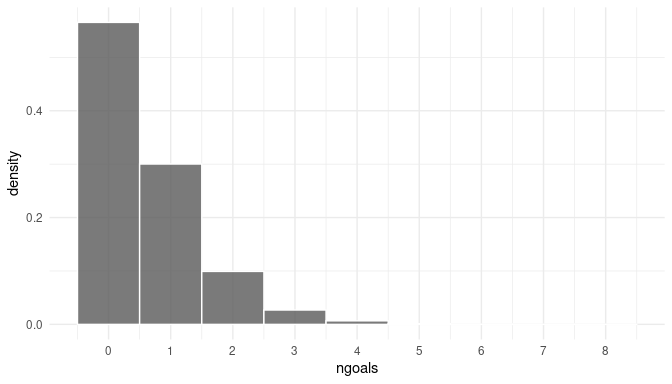
Do you think it is poisson? Let’s figure it out. We will add the identical P(X = k) on the graph: $$X \sim Pois(k,\lambda) \Rightarrow P(X=k) = \frac{0.61^k e^{-0.61}}{k!}$$
goalRange <- max(totalGoals$ngoals) - min(totalGoals$ngoals) + 1
lambda <- mean(totalGoals$ngoals)
pois <- data.frame(x = 0:max(totalGoals$ngoals))
pois$p <- dpois(pois$x, lambda) # identical probabilities
t(pois)
## [,1] [,2] [,3] [,4] [,5] [,6]
## x 0.0000000 1.0000000 2.0000000 3.00000000 4.000000000 5.0000000000
## p 0.5408947 0.3323964 0.1021339 0.02092147 0.003214221 0.0003950475
## [,7] [,8] [,9]
## x 6.000000e+00 7.000000e+00 8.000000e+00
## p 4.046147e-05 3.552116e-06 2.728606e-07
Now we can overlap the graphs:
ggplot(totalGoals, aes(x=ngoals, y=..density..)) +
geom_histogram(bins = goalRange, colour = 'white', alpha=.8) +
geom_point(data = pois, mapping = aes(x = x, y = p), size = 3, colour='firebrick') + # points
geom_line(data = pois, mapping = aes(x = x, y = p), colour='firebrick') + # lines
scale_x_continuous(n.breaks = goalRange) +
theme_minimal()
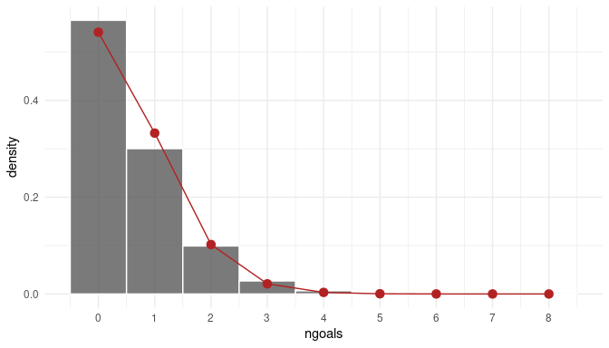
Back2back Plot
Now we can overlap the graphs:
ggplot(totalGoals, aes(y=ngoals)) +
geom_histogram(data = subset(totalGoals, team == 'MTL'), aes(y=ngoals, x = ..count..), bins=6, fill='firebrick',colour='white') +
geom_histogram(data = subset(totalGoals, team == 'TOR'), aes(y=ngoals, x = -..count..), bins=6,fill='steelblue', colour='white')+
annotate('text', x=-300,y=5, label = 'Maple Leafs') +
annotate('text', x=300,y=5, label = 'Montreal Canadiens') +
theme_minimal()
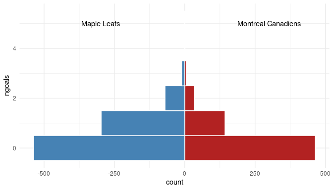
or you can use barplots
ggplot(totalGoals, aes(y=ngoals)) +
geom_bar(data = subset(totalGoals, team == 'MTL'), aes(x=..count.., y=ngoals), fill='firebrick') +
geom_bar(data = subset(totalGoals, team == 'TOR'), aes(x=-..count.., y=ngoals), fill = 'steelblue') +
annotate('text', x=-300,y=5, label ='Maple Leafs') +
annotate('text', x=300,y=5, label ='Montreal Canadiens') +
theme_minimal()
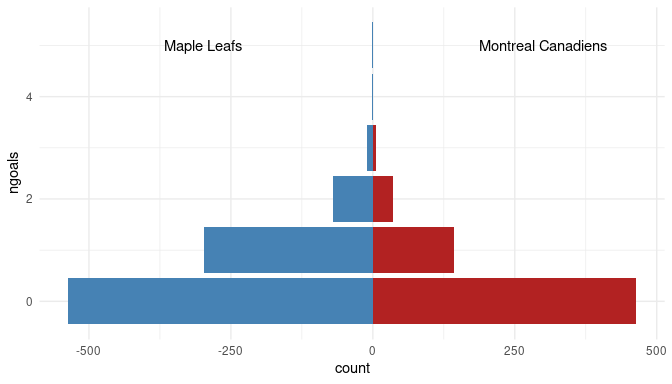
Discrete String Variables
Bar plots (and column charts) are very similar to histograms. In histograms we group the continuous variables into bins, whereas the bins naturally exist.
If you want to use bar charts or treemaps you have to somehow aggregate the data, either doing beforehand or during plotting. Below you can find the data in the two form, and the ways you will visualize them:
Aggregated
Assume you want to plot the distribution of confirmed cases w.r.t. Age Group. You may aggregate your data before plotting as:
totalCases <- group_by(covid, Age_Group) %>% summarise(ncases = n())
totalCases
## # A tibble: 10 x 2
## Age_Group ncases
## <chr> <int>
## 1 <20 571
## 2 20s 2454
## 3 30s 2591
## 4 40s 2936
## 5 50s 3545
## 6 60s 2644
## 7 70s 1900
## 8 80s 2661
## 9 90s 1920
## 10 Unknown 14
Now you can easily plot it. You need to tell ggplot to use numbers as
they are in the data. You can do it with stat='identity:
ggplot(totalCases, aes(y = Age_Group, x = ncases, fill = Age_Group)) +
geom_bar(stat = 'identity')
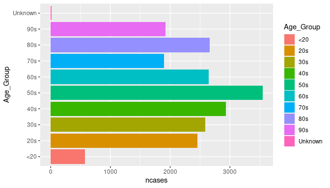
Or you can add another dimension, Outcome1, during aggreagation and
then plot:
totalCases <- group_by(covid, Age_Group, Outcome1) %>% summarise(ncases = n())
ggplot(totalCases, aes(y = Age_Group, x = ncases, fill=Outcome1)) +
geom_bar(stat = 'identity')

You can also plot proportions:
totalCases <- group_by(covid, Age_Group, Outcome1) %>% summarise(ncases = n()/nrow(covid))
ggplot(totalCases, aes(y = Age_Group, x = ncases, fill=Outcome1)) + geom_bar(stat = 'identity')
Non-aggregated
If your data is raw, then ggplot has enough functionality to aggregate
on the fly using ..count.. or stat(count):
ggplot(covid, aes(y = Age_Group, x = ..count..)) + geom_bar()
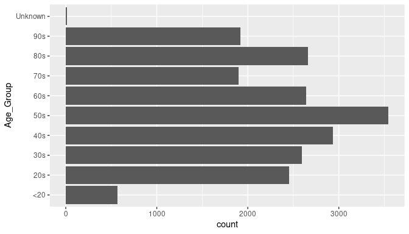
It is easy to fill with another variable:
ggplot(covid, aes(y = Age_Group, x = ..count.., fill=Outcome1)) + geom_bar()
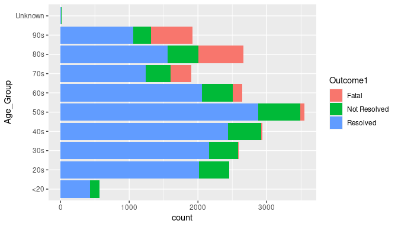
If you want the proportions, not count of cases falling to each Age_Group, you can divide to number of rows as:
ggplot(covid, aes(y = Age_Group, x = ..count../nrow(covid), fill=Outcome1)) + geom_bar()
Back To Back Comparison
Similar to previous example we will generate the back2back plot
manually. But first let’s remove the Unknown group and compare female
and male:
covid <- subset(covid, Age_Group != 'Unknown')
ggplot(covid, aes(y = Age_Group)) +
geom_bar(data = subset(covid, Gender == 'MALE'), aes(x= stat(count)), fill = 'firebrick', alpha=.6) +
geom_bar(data = subset(covid, Gender == 'FEMALE'), aes(x=-stat(count)), fill = 'steelblue', alpha=.6) +
theme_minimal() +
ggtitle('Comparison of Confirmed Cases by Gender') +
annotate('text', x = -2000, y = '90s', label='Female') +
annotate('text', x = 1500, y = '90s', label='Male')
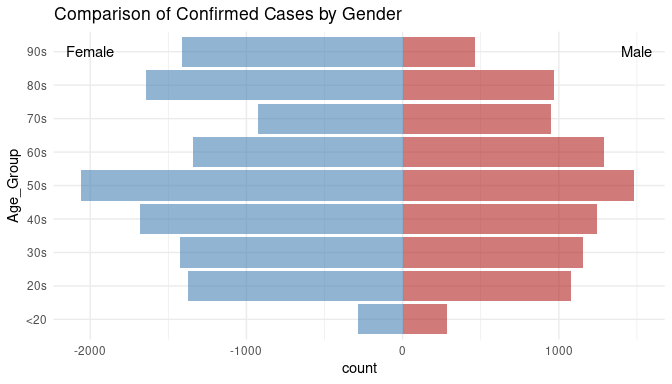
It looks that female are more exposed to risk at least in Ontario.
Let’s check the confirmed cases:
covid <- subset(covid, Age_Group != 'Unknown')
ggplot(covid, aes(y = Age_Group, fill = Outcome1)) +
geom_bar(data = subset(covid, Gender == 'MALE'), aes(x=stat(count)), colour = 'white', alpha=.6) +
geom_bar(data = subset(covid, Gender == 'FEMALE'), aes(x=-stat(count)), colour = 'white', alpha=.6) +
theme_minimal() +
ggtitle('Comparison of Confirmed Cases by Gender') +
annotate('text', x = -2000, y = '90s', label='Female') +
annotate('text', x = 1500, y = '90s', label='Male')
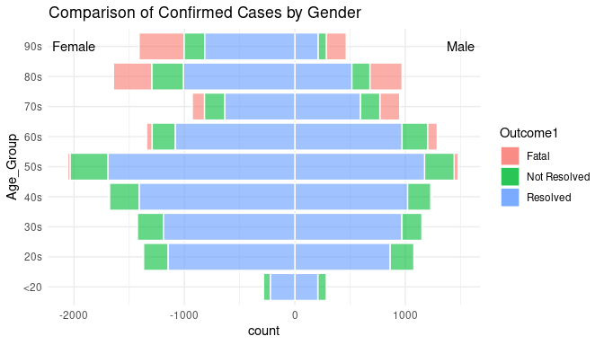
There are more fatal cases in female than male. But is it due to the fact that there are more positive female than male?
The above plot is good in visualizing numbers but not the proportions.
We may think falsely that female death rates higher than male. If we add
position = 'fill' we can see that Gender and Outcome1 are not
related:
covid <- subset(covid, Age_Group != 'Unknown')
ggplot(covid, aes(y = Age_Group, fill = Outcome1)) +
geom_bar(data = subset(covid, Gender == 'MALE'), aes(x=stat(count)), colour = 'white', alpha=.6, position = 'fill') +
geom_bar(data = subset(covid, Gender == 'FEMALE'), aes(x=-stat(count)), colour = 'white', alpha=.6, position = 'fill') +
theme_minimal() +
ggtitle('Comparison of Female (left) and Male (right) Confirmed Cases')
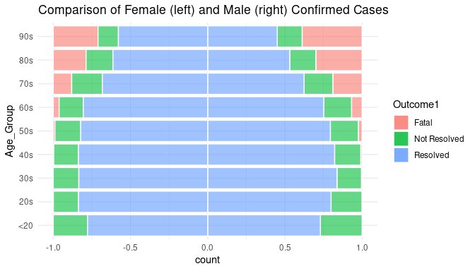
There is not much of a difference in the proportions.
Spoiler! 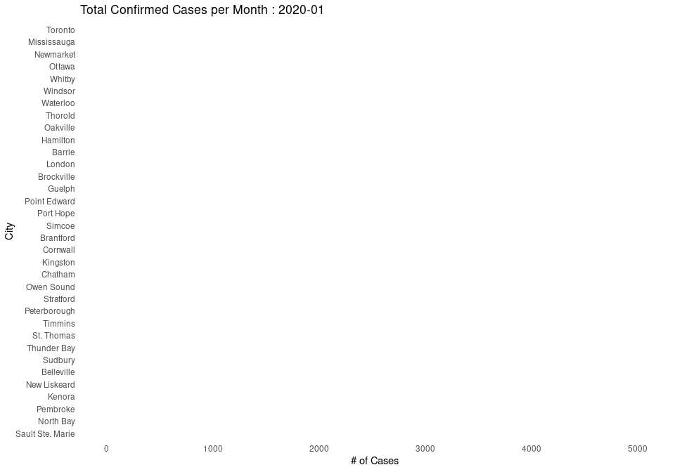
Making BBC Quality Plots
Let’s try to plot something similar to this:
sums <- subset(covid, Age_Group != 'Unknown' & Gender %in% c('MALE','FEMALE')) %>% group_by(Age_Group,Gender) %>% summarise(ncases=n(), pos=n() + 150)
sums$pos[sums$Gender=='FEMALE'] <- -sums$pos[sums$Gender=='FEMALE']
ggplot() +
geom_bar(data = subset(covid, Gender == 'MALE'), aes(x=stat(count), y=Age_Group,fill = Outcome1), colour = 'white', alpha=.8) +
geom_bar(data = subset(covid, Gender == 'FEMALE'), aes(x=-stat(count), y=Age_Group,fill = Outcome1), colour = 'white', alpha=.8)+
theme_minimal() +
scale_fill_manual(name="", values = c("#ffa100", "#ffe25a","#007ea1")) +
geom_text(data= sums, mapping = aes(x=pos, y=Age_Group, label=abs(ncases)),size=5) +
labs(title = 'Comparison of Confirmed Cases',subtitle = 'Ontario') +
annotate('text', x = -1000, y = 'Gender', label='Female',size = 6) +
annotate('text', x = 750, y = 'Gender', label='Male',size = 6) +
theme(panel.grid.major = element_blank(),
panel.grid.minor = element_blank(),
axis.title.x = element_blank(),
axis.text.x = element_blank(),
axis.text.y = element_text(size=16),
title = element_text(size=16))
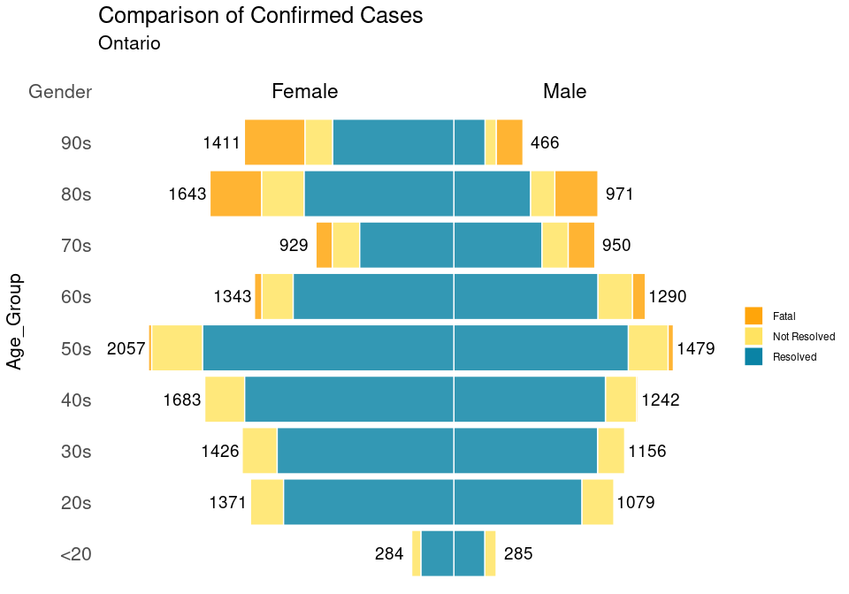
Visualizing conditional probabilities and independence
Recall the conditional probabilities: $$P(A | B) = \frac{P(A,B)}{P(B)} \quad \Rightarrow \quad P(A | B) P(B) = P(A,B)$$
A package, eikosograms, written by a University of Waterloo professor
is effectively showing the dependencies in the categorical data:
library('eikosograms')
eikos(y= 'Outcome1', x='Gender', data = subset(covid, Gender %in% c('MALE','FEMALE')))
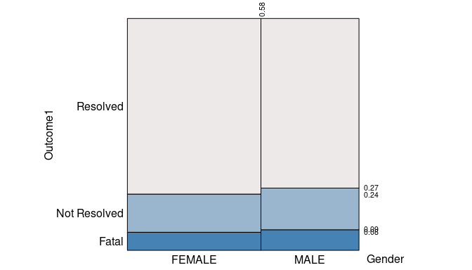
In the above plot the size of the area correspond to the joint probabilities. By using the information above we point several conditional probabilities written in the plot:
- P(Female) = 0.58 (on the top edge of the plot)
- P(Fatal|G = Female) = 0.08
- P(Resolved|G = Male) = 1 − 0.27 = 0.73
- P(Fatal|G = Male) = P(Fatal|G = Female) = P(Fatal) ∼ 0.08
Since the probabilities are very close to each other we can say probability of death is independent from gender.
Bayes’ Theorem
Recall the theorem:
$$P(A | B) = \frac{P(A,B)}{P(B)} \Rightarrow P(B | A) = \frac{P(A|B)P(B)}{P(A)}$$
In eikosograms this transformation corresponds to flipping the plot on x-y axis:
eikos(x= 'Outcome1', y='Gender', data = subset(covid, Gender %in% c('MALE','FEMALE')))
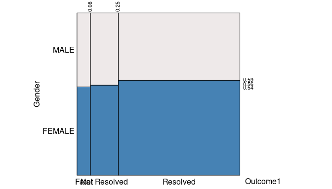
The above is the same plot, just transposed. Now we can see the other probabilities such as
- P(Fatal) = 0.08
- P(Female|Fatal) = 0.54
The conditional proabilities of Fatal and Resolved are very close to each other. Gender and Outcome1 are independent.
library('eikosograms')
eikos(y= 'Outcome1', x='Age_Group', data = covid)
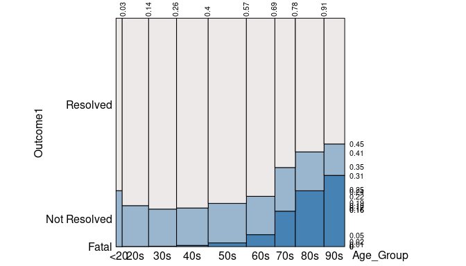
The outcome is independent among age groups < = 50s but dependent when the age group is greater than 50s.
Visualizing Proportions
Pie Charts
Pie charts are extremely widely used, but it is not hailed by all data visualization researchers. In fact mighty statistician and pioneer in data visualization Edward Tufte famously said:
The only worse design than a pie chart is several of them
Apparently R and ggplot people agree, but not everyone agrees. If you want to generate them, here how it is. First start drawing the below stacked bar chart where the areas will be equal to the areas in the pie chart:
aggDat <- group_by(covid, Outcome1) %>% summarise(ncases = n())
ggplot(aggDat) +
geom_col(aes(x = 1, y = ncases, fill = Outcome1), position = "fill") +
scale_fill_manual(name="", values = c("firebrick", "#ffe25a","#007ea1"))
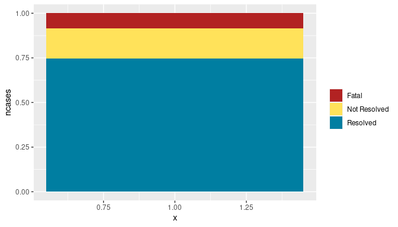
then revolve it around y axis:
aggDat <- group_by(covid, Outcome1) %>% summarise(ncases = n())
ggplot(aggDat) +
geom_col(aes(x = 1, y = ncases, fill = Outcome1), position = "fill") +
coord_polar(theta = "y") +
scale_fill_manual(name="", values = c("firebrick", "#ffe25a","#007ea1"))
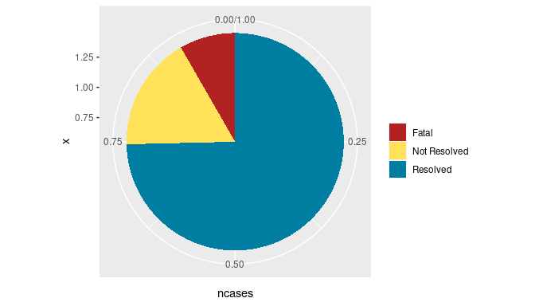
You can also add facets:
aggDat <- group_by(covid, Gender, Outcome1) %>% summarise(ncases = n())
ggplot(aggDat) +
geom_col(aes(x = 1, y = ncases, fill = Outcome1), position = "fill") +
facet_wrap( ~ Gender) +
coord_polar(theta = "y") +
scale_fill_manual(name="", values = c("firebrick", "#ffe25a","#007ea1"))
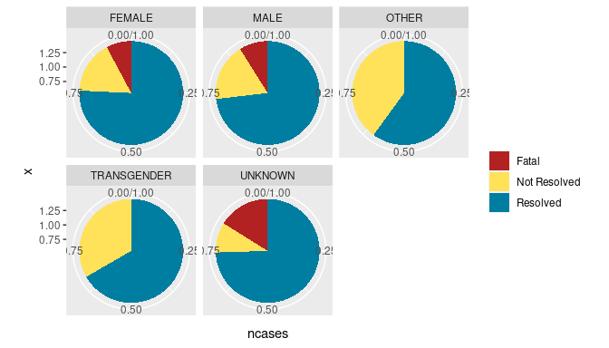
or put the names inside the plot so that it will look like your breakfast which is also known as donut plot:
aggDat <- group_by(covid, Gender, Outcome1) %>% summarise(ncases = n())
ggplot(aggDat) +
geom_col(aes(x = 1, y = ncases, fill = Outcome1), position = "fill") +
facet_wrap( ~ Gender) +
geom_text(aes(x = 0, y = 0, label = Gender)) +
coord_polar(theta = "y") +
scale_fill_manual(name="", values = c("firebrick", "#ffe25a","#007ea1")) +
theme_void() +
theme(strip.background=element_blank(),
strip.text=element_blank())
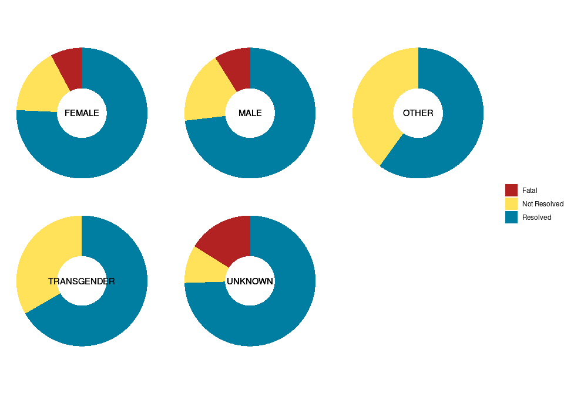
Polar Coordinates
aggDat <- group_by(covid, Outcome1) %>% summarise(ncases = n())
ggplot(aggDat) +
geom_bar(aes(x = Outcome1, y=ncases, fill = Outcome1), stat = 'identity') +
# coord_polar() +
scale_fill_manual(name="", values = c("firebrick", "#ffe25a","#007ea1"))

aggDat <- group_by(covid, Outcome1) %>% summarise(ncases = n())
ggplot(aggDat) +
geom_bar(aes(x = Outcome1, y=ncases, fill = Outcome1), stat = 'identity') +
coord_polar() +
# theme(aspect.ratio = 1) +
scale_fill_manual(name="", values = c("firebrick", "#ffe25a","#007ea1"))
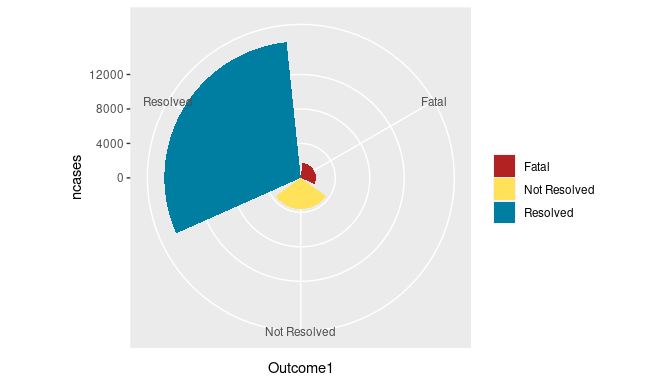
aggDat <- group_by(covid, Outcome1, Age_Group) %>% summarise(ncases = n())
ggplot(aggDat) +
geom_bar(aes(x = Outcome1, y=ncases, fill = Outcome1), stat = 'identity') +
coord_polar() +
scale_fill_manual(name="", values = c("firebrick", "#ffe25a","#007ea1"))+
facet_wrap( ~ Age_Group) +
theme_void()
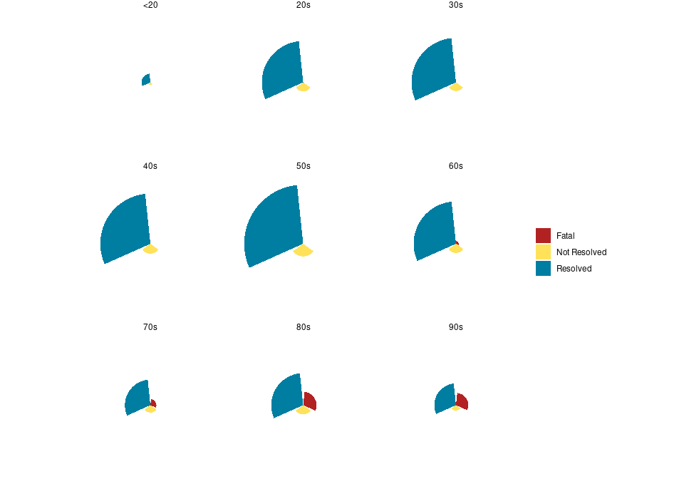
Treemaps
library(treemapify)
covid <- covid[ !is.na(covid$City), ]
totalCases <- group_by(covid, City) %>% summarise(ncases = n())
ggplot(totalCases, aes(area = ncases, fill = ncases, label=City)) +
geom_treemap() +
geom_treemap_text(fontface = "italic", colour = "white", place = "topleft",
grow = T)
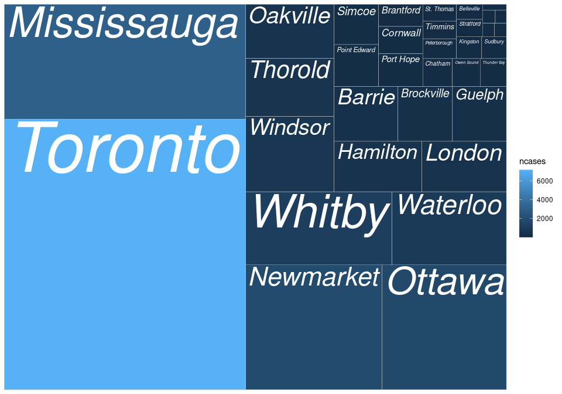
library('treemapify')
fatal <- subset(covid, Outcome1 == 'Fatal') %>% group_by(City) %>% summarise(ncases = n())
ggplot(fatal, aes(area = ncases, fill = ncases, label=City)) +
geom_treemap() +
geom_treemap_text(fontface = "italic", colour = "white", place = "topleft",
grow = T) +
scale_fill_gradient(low='steelblue', high='orange')
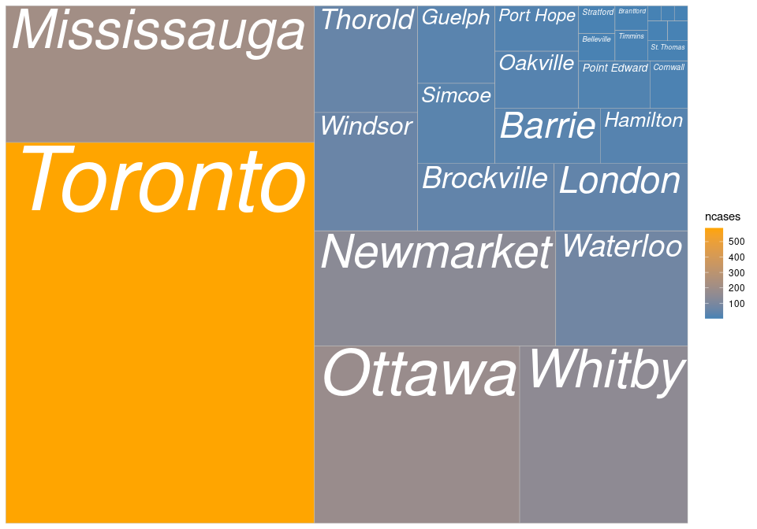
Waffle Charts
Another powerful way to plot categorical variable is using Waffle chart. This type can give you the sense that you can observe each individual.
But first you need to install it using a special repository:
# install.packages('extrafont')
# install.packages("waffle", repos = "https://cinc.rud.is")
library('waffle')
library('ggthemes')
library('hrbrthemes')
subset(covid, City == 'Waterloo') %>% group_by(Gender) %>% summarise(ncases = n()) %>%
ggplot(aes(fill = Gender, values = ncases)) +
geom_waffle(n_rows = 20, size = .5, colour = "white", flip = F) +
coord_equal() +
theme_void() +
theme_enhance_waffle() +
labs(
title = "Total Number of Cases by Gender",
subtitle = "Waterloo",
x = "Year",
y = "Count"
)
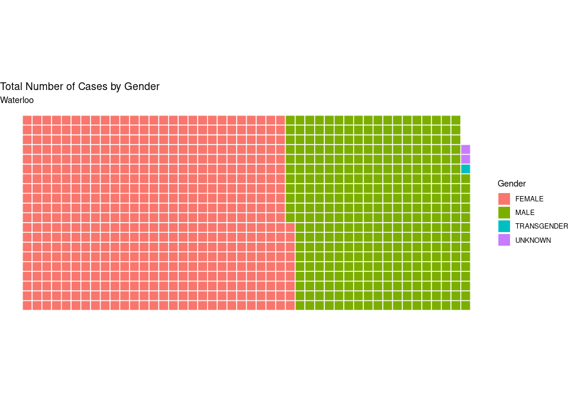
subset(covid, City %in% c('Newmarket','Ottawa','Waterloo')) %>%
group_by(City, Outcome1) %>% summarise(ncases = n()) %>%
ggplot(aes(fill = Outcome1, values = ncases)) +
geom_waffle(n_rows = 30, size = 0.2, colour = "white", flip = T) +
facet_wrap(~City, nrow=1) +
coord_equal() +
scale_fill_manual(name="", values = c("firebrick", "#ffe25a","#007ea1")) +
theme_void() +
theme(panel.grid = element_blank(), axis.ticks.y = element_line(),
text = element_text(size=16))
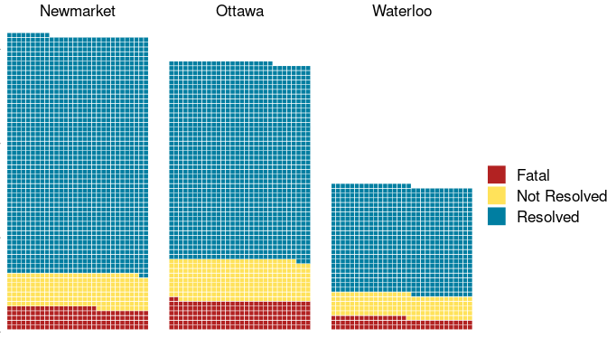
Deliverables
6
Choose two categorical or more variables and choose one type of chart (bar, back2back, treemap, waffle, etc.)
- Using the chart you picked, plot one categorical variable
- Map the other categorical variable to
area,size,colouror whatever would look nice on the plot. - If you have chosen back2back plot, compare two categories in the categorical variable
References
- https://www.datanovia.com/en/blog/ggplot-colors-best-tricks-you-will-love/
- Data Visualization with R
- https://www.datanovia.com/en/blog/gganimate-how-to-create-plots-with-beautiful-animation-in-r/
- Treemapify Documentation2
- Visualizing a Categorical Variable
- Waffle Chart
- GGPlot Colors Best Tricks You Will Love